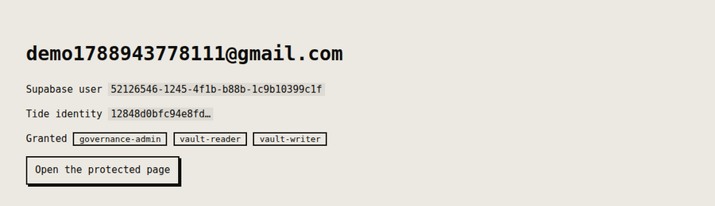

Integrations / Supabase
Supabase + minidauth keep your login, add keys nobody holds
Supabase keeps the login and the database. minidauth adds a key that no single server holds, so sensitive columns hold ciphertext, and roles that only a quorum of your admins can grant.
Run end to end
What stays and what moves
- Stays with Supabase
- Accounts, sessions, passwords and the sign-in screen. Nothing about how your users log in changes.
- Moves to the network
- The key that encrypts and signs, which exists only as shares that 14 of 20 independent nodes have to cooperate to use, and the decision about who holds a role, which takes several of your admins approving it.
Adding it to a Supabase app
-
Store the link in
app_metadata.tide_vuidWritten with the service role key. App metadata rather than user metadata, because a user can write their own user metadata.
-
Add one callback route
The user links their Tide identity in a page served by the Tide network, which neither your app nor minidauth can see into. The shared
link.jsdrop-in adds the routes; you tell it who is signed in and where to store the vuid. -
Read roles from minidauth, not from Supabase
Supabase copies app_metadata straight into the access token, so it is tempting to put roles there and read them from the JWT. A role in a token your project can mint is a role your project can grant itself, so the example reads roles from the grant record on every request, and no row you edit in Supabase changes the answer.

Tokens issued before the link
Because the access token carries app_metadata, a token issued before the user linked their Tide identity won't contain the vuid. The example asks the user to sign in again rather than pretending the token refreshed. For the demo, turn email confirmations off under Authentication, Providers, Email.
Two full apps on Supabase
If you want more than a sign-in demo, two larger examples run on Supabase. payouts keeps bank details as ciphertext and only moves money the network has signed, so editing an amount in Supabase makes the row show as forged. vault is a confidential client-records desk whose sensitive fields are sealed in the browser and revealed only for a granted role.
Users without a Tide account
The Supabase example also mounts a /tideless page. There, the signed-in Supabase user
encrypts and decrypts with no Tide account at all: their Supabase user id is the subject, a
role the quorum granted that id is the gate, and the browser never holds a credential. It
needs a public, voucher-gated decrypt policy, which the
setup guide covers.
Run the example
Run end to end against a real Supabase project and the public Tide network, on the free tier with no card.
MINIDAUTH_OPS_TOKEN=<ops token> APP_URL=http://localhost:3004 \ node ../shared/register-callback.js npm install export SUPABASE_URL=https://xxxx.supabase.co export SUPABASE_ANON_KEY=... export SUPABASE_SERVICE_ROLE_KEY=... # server side only export MINIDAUTH_TOKEN=dev-sample-app-token npm start # http://localhost:3004
minidauth itself has to be running first, with a vendor key created and its policies deployed. The quick start is two Docker commands.
Stuck on the Supabase side? Join the Discord and I'll help you get it running.
Also works with: Clerk · Auth0 · Amazon Cognito · Better Auth